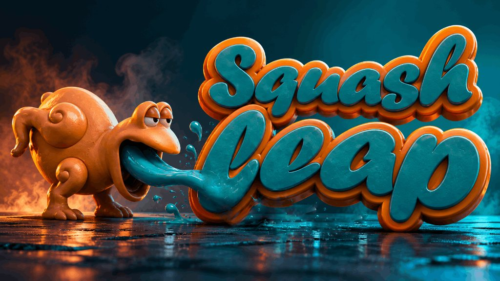

1. Project Vision
What happens when you take a platformer and ban walking?
That was the core creative constraint behind Squash Leap, a solo exploratory project I built in Unity. I wanted to see if I could create an engaging, high-mobility game by completely eliminating traditional directional movement keys (A/D or left/right stick). Instead, the player controls a cute frog who is entirely dependent on physical interactions with the environment to move.
Locomotion is split into two distinct kinetic systems: 1. A dynamic, physics-based tongue grapple that lets the player hook onto and swing from "candy" anchors in the sky. 2. A charge-up jump for launching off platforms.
The engineering challenge was to dive deep into Unity's 2D physics engine, manipulating joints, updating line renderers, and coding time-based force calculations to build a physics loop that feels snappy, responsive, and incredibly fun to master.
2. Technical Architecture & Module Structure
The gameplay systems are structured to isolate physics-based locomotion from environment trigger actions:
Grappling Systems
- SpringJoint2D Adapter
- Anchor Overlap Sensor
- Dynamic Retraction Controller
- Tongue LineRenderer
- Target Vector Aiming
Launch & Jump Physics
- Charge Timer Accumulator
- Jump Force Clamper
- Launch Vector Resolver
- Visual Squish Interpolator
Interactive Triggers
- Proximity Trigger Sensor
- Lever Actuator Component
- Door Animation Bridge
- Event Connection Broker
3. Key Technical Systems — Deep Dive
3.1 SpringJoint2D Tongue Grapple & Retraction Physics Joint Modulation
Creating a grappling hook that doesn't just act as a static line, but behaves like an elastic, controllable rope. The player needed to swing realistically, while also having the ability to actively pull themselves towards the anchor point at a consistent, responsive speed.
Utilized Unity's SpringJoint2D to manage the physical hook connection, dynamically modifying joint properties at runtime:
- Anchor Constraint Validation: A 2D raycast and overlap sensor sweeps around the player's aim vector, ensuring the tongue can only attach to objects tagged as "Candy" anchors.
- Dynamic Retraction: When the player holds down the pull button, a controller script reduces the joint's distance parameter incrementally. Rather than modifying velocity vectors directly—which bypasses Unity's collision system—this relies on the physics engine to pull the Rigidbody2D naturally, preserving environmental collisions.
- Visual Rendering: A custom script updates a LineRenderer every frame, stretching the tongue sprite from the mouth to the active anchor coordinates.
3.2 Time-Based Charge-Up Jump Mechanics Accumulator & Force Mapping
Designing a jump mechanic that supports nuanced mobile touch controls, permitting both small hops and high launches without introducing complex touch gestures.
Implemented a time-accumulator launch calculator that monitors player input duration:
- Force Accumulation: Holding down the input charges a timer. This timer maps to a jump force range clamped between a defined minimum and maximum threshold.
- Squash Visual Feedback (The Non-Diegetic HUD): To avoid cluttering the screen with a generic progress bar, I mapped the timer value directly to the player's sprite scale. While charging, the frog squashes down vertically and stretches horizontally, intuitively communicating the stored kinetic energy.
- Vector Launch: On release, the stored force is applied as a sudden impulse vector along the frog's facing direction, launching the Rigidbody2D.
3.3 Event-Driven Lever & Door Interactions Decoupled Activation
Creating a level interaction system where levers open specific locked doors, without creating tight object references that make level editing difficult.
Developed a trigger sensor model that uses C# delegates to broadcast lever activations:
- Proximity Checks: Levers use 2D triggers to detect when the player is within interaction range, showing a prompt on mobile screens.
- Decoupled Triggering: Levers expose an OnActivated event. Specific doors subscribe to these events at start-up, meaning a single lever can trigger multiple actions (opening a door, activating a trap, triggering a camera zone) without containing hardcode dependencies.
4. Technical Implementation & Scripts
The two core scripts below demonstrate the physics integration and control mapping implemented for the locomotion system:
TongueGrappleController.cs
using UnityEngine;
public class TongueGrappleController : MonoBehaviour
{
[Header("Joint Settings")]
public SpringJoint2D springJoint;
public LineRenderer tongueLine;
public float pullSpeed = 5f;
public float minJointDistance = 0.5f;
[Header("Sensor Settings")]
public Transform mouthPivot;
public LayerMask candyLayer;
public float maxGrappleDistance = 10f;
private bool isGrappled = false;
void Start()
{
// Disable the physics joint initially
springJoint.enabled = false;
tongueLine.positionCount = 0;
}
void Update()
{
// Mobile touch / click detection
if (Input.GetMouseButtonDown(0) && !isGrappled)
{
TryGrapple();
}
else if (Input.GetMouseButtonUp(0) && isGrappled)
{
ReleaseGrapple();
}
// Active pull mechanics
if (isGrappled)
{
if (Input.GetMouseButton(1) || Input.GetKey(KeyCode.Space))
{
RetractTongue();
}
UpdateTongueVisuals();
}
}
void TryGrapple()
{
Vector3 mouseWorldPos = Camera.main.ScreenToWorldPoint(Input.mousePosition);
Vector2 targetDir = (mouseWorldPos - mouthPivot.position).normalized;
RaycastHit2D hit = Physics2D.Raycast(mouthPivot.position, targetDir, maxGrappleDistance, candyLayer);
if (hit.collider != null)
{
isGrappled = true;
// Map the physical joint coordinates to the hit object
springJoint.enabled = true;
springJoint.connectedAnchor = hit.point;
springJoint.distance = Vector2.Distance(mouthPivot.position, hit.point);
tongueLine.positionCount = 2;
}
}
void RetractTongue()
{
// Reduce the joint distance over time
if (springJoint.distance > minJointDistance)
{
springJoint.distance = Mathf.MoveTowards(springJoint.distance, minJointDistance, pullSpeed * Time.deltaTime);
}
}
void UpdateTongueVisuals()
{
tongueLine.SetPosition(0, mouthPivot.position);
tongueLine.SetPosition(1, springJoint.connectedAnchor);
}
void ReleaseGrapple()
{
isGrappled = false;
springJoint.enabled = false;
tongueLine.positionCount = 0;
}
}ChargeJump.cs
using UnityEngine;
public class ChargeJump : MonoBehaviour
{
[Header("Jump Parameters")]
public Rigidbody2D rb;
public float minJumpForce = 5f;
public float maxJumpForce = 15f;
public float maxChargeTime = 2.0f;
[Header("Visual Scale feedback")]
public Transform spriteContainer;
private Vector3 initialScale;
private float chargeTimer = 0f;
private bool isCharging = false;
void Start()
{
initialScale = spriteContainer.localScale;
}
void Update()
{
// Detect mobile touch or keyboard spacebar
if (Input.GetKeyDown(KeyCode.Space))
{
isCharging = true;
chargeTimer = 0f;
}
if (isCharging)
{
chargeTimer += Time.deltaTime;
ApplySquashEffect();
if (Input.GetKeyUp(KeyCode.Space))
{
LaunchPlayer();
}
}
}
void ApplySquashEffect()
{
float ratio = Mathf.Clamp01(chargeTimer / maxChargeTime);
// Squash model down and stretch wide
float squashX = initialScale.x * (1f + (ratio * 0.3f));
float squashY = initialScale.y * (1f - (ratio * 0.3f));
spriteContainer.localScale = new Vector3(squashX, squashY, initialScale.z);
}
void LaunchPlayer()
{
isCharging = false;
// Calculate force based on charge duration
float chargePct = Mathf.Clamp01(chargeTimer / maxChargeTime);
float appliedForce = Mathf.Lerp(minJumpForce, maxJumpForce, chargePct);
// Reset visual squish scaling instantly
spriteContainer.localScale = initialScale;
// Launch frog upwards and slightly forward
Vector2 launchDirection = (Vector2.up + (Vector2.right * transform.localScale.x * 0.2f)).normalized;
rb.AddForce(launchDirection * appliedForce, ForceMode2D.Impulse);
}
}